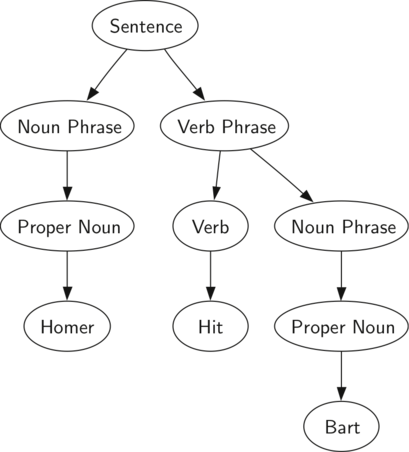
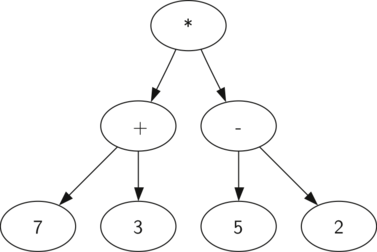

With the implementation of our tree data structure complete, we now look at an example of how a tree can be used to solve some real problems. In this section we will look at parse trees. Parse trees can be used to represent real-world constructions like sentences or mathematical expressions.

Figure8.5.1.A Parse Tree for a Simple Sentence.
Figure8.5.1 shows the hierarchical structure of a simple sentence. Representing a sentence as a tree structure allows us to work with the individual parts of the sentence by using subtrees.

Figure8.5.2.Parse Tree for \(((7+3)*(5-2))\text{.}\)
We can also represent a mathematical expression such as \(((7 + 3) * (5 - 2))\) as a parse tree, as shown in Figure8.5.2. We have already looked at fully parenthesized expressions, so what do we know about this expression? We know that multiplication has a higher precedence than either addition or subtraction. Because of the parentheses, we know that before we can do the multiplication we must evaluate the parenthesized addition and subtraction expressions. The hierarchy of the tree helps us understand the order of evaluation for the whole expression. Before we can evaluate the top-level multiplication, we must evaluate the addition and the subtraction in the subtrees. The addition, which is the left subtree, evaluates to 10. The subtraction, which is the right subtree, evaluates to 3. Using the hierarchical structure of trees, we can simply replace an entire subtree with one node once we have evaluated the expressions in the children. Applying this replacement procedure gives us the simplified tree shown in Figure8.5.3.
Figure8.5.3.A Simplified Parse Tree for \(((7+3)*(5-2))\text{.}\)
In the rest of this section we are going to examine parse trees in more detail. In particular we will look at
How to build a parse tree from a fully parenthesized mathematical expression.
How to evaluate the expression stored in a parse tree.
How to recover the original mathematical expression from a parse tree.
The first step in building a parse tree is to break up the expression string into a vector of tokens. There are four different kinds of tokens to consider: left parentheses, right parentheses, operators, and operands. We know that whenever we read a left parenthesis we are starting a new expression, and hence we should create a new tree to correspond to that expression. Conversely, whenever we read a right parenthesis, we have finished an expression. We also know that operands are going to be leaf nodes and children of their operators. Finally, we know that every operator is going to have both a left and a right child.
Using the information from above we can define four rules as follows:
If the current token is a '(', add a new node as the left child of the current node, and descend to the left child.
If the current token is in the vector ['+','-','/','*'], set the root value of the current node to the operator represented by the current token. Add a new node as the right child of the current node and descend to the right child.
If the current token is a number, set the root value of the current node to the number and return to the parent.
If the current token is a ')', go to the parent of the current node.
Before writing the C++ code, lets look at an example of the rules outlined above in action. We will use the expression \((3 + (4 * 5))\text{.}\) We will parse this expression into the following vector of character tokens ['(', '3', '+','(', '4', '*', '5' ,')',')']. Initially we will start out with a parse tree that consists of an empty root node. Figure8.5.4 illustrates the structure and contents of the parse tree, as each new token is processed.
Figure8.5.4.Tracing Parse Tree Construction.
Using Figure8.5.4, lets walk through the example step by step:
Create an empty tree.
Read ( as the first token. By rule1, create a new node as the left child of the root. Make the current node this new child.
Read 3 as the next token. By rule3, set the root value of the current node to 3 and go back up the tree to the parent.
Read + as the next token. By rule2, set the root value of the current node to + and add a new node as the right child. The new right child becomes the current node.
Read ( as the next token. By rule1, create a new node as the left child of the current node. The new left child becomes the current node.
Read 4 as the next token. By rule3, set the value of the current node to 4. Make the parent of 4 the current node.
Read * as the next token. By rule2, set the root value of the current node to * and create a new right child. The new right child becomes the current node.
Read 5 as the next token. By rule3, set the root value of the current node to 5. Make the parent of 5 the current node.
Read ) as the next token. By rule4 we make the parent of * the current node.
Read ) as the next token. By rule4 we make the parent of + the current node. At this point there is no parent for + so we are done.
From the example above, it is clear that we need to keep track of the current node as well as the parent of the current node. The tree interface provides us with a way to get children of a node, through the getLeftChild and getRightChild methods, but how can we keep track of the parent? A simple solution to keeping track of parents as we traverse the tree is to use a stack. Whenever we want to descend to a child of the current node, we first push the current node on the stack. When we want to return to the parent of the current node, we pop the parent off the stack.
Using the rules described above, along with the Stack and BinaryTree operations, we are now ready to write a C++ function to create a parse tree. The code for our parse tree builder is presented in Task8.5.1.a.
The four rules for building a parse tree are coded as the first four clauses of the if statement on lines 12, 17, 23, and 26 of Task8.5.1.a. In each case you can see that the code implements the rule, as described above, with a few calls to the BinaryTree or Stack methods. The only error checking we do in this function is in the else clause where a ValueError exception will be raised if we get a token from the vector that we do not recognize.
Now that we have built a parse tree, what can we do with it? As a first example, we will write a function to evaluate the parse tree, returning the numerical result. To write this function, we will make use of the hierarchical nature of the tree. Look back at Figure8.5.2. Recall that we can replace the original tree with the simplified tree shown in Figure8.5.3. This suggests that we can write an algorithm that evaluates a parse tree by recursively evaluating each subtree.
As we have done with past recursive algorithms, we will begin the design for the recursive evaluation function by identifying the base case. A natural base case for recursive algorithms that operate on trees is to check for a leaf node. In a parse tree, the leaf nodes will always be operands. Since numerical objects like integers and floating points require no further interpretation, the evaluate function can simply return the value stored in the leaf node. The recursive step that moves the function toward the base case is to call evaluate on both the left and the right children of the current node. The recursive call effectively moves us down the tree, toward a leaf node.
To put the results of the two recursive calls together, we can simply apply the operator stored in the parent node to the results returned from evaluating both children. In the example from Figure8.5.3 we see that the two children of the root evaluate to themselves, namely 10 and 3. Applying the multiplication operator gives us a final result of 30.
The code for a recursive evaluate function is shown in Task8.5.2.a. First, we obtain references to the left and the right children of the current node. If both the left and right children evaluate to None, then we know that the current node is really a leaf node. This check is on line 7. If the current node is not a leaf node, look up the operator in the current node and apply it to the results from recursively evaluating the left and right children.
To implement the arithmetic, we use a dictionary with the keys '+', '-', '*', and '/'. The values stored in the dictionary are functions from C++s operator module. The operator module provides us with the functional versions of many commonly used operators. When we look up an operator in the dictionary, the corresponding function object is retrieved. Since the retrieved object is a function, we can call it in the usual way function(param1,param2). So the lookup opers['+'](2,2) is equivalent to operator.add(2,2).
Exploration8.5.2.Evaluating A Parse Tree.
(a)C++ Implementation.
class Operator {
public:
int add(int x, int y){
return x + y;
}
int sub(int x, int y){
return x - y;
}
int mul(int x, int y){
return x * y;
}
int div(int x, int y){
return x / y;
}
};
int to_int(string str) {
stringstream convert(str);
int x = 0;
convert >> x;
return x;
}
string to_string(int num) {
string str;
ostringstream convert;
convert << num;
str = convert.str();
return str;
}
string evaluate(BinaryTree *parseTree) {
Operator Oper;
BinaryTree *leftC = parseTree->getLeftChild();
BinaryTree *rightC = parseTree->getRightChild();
if (leftC && rightC) {
if (parseTree->getRootVal() == "+") {
return to_string(Oper.add(to_int(evaluate(leftC)), to_int(evaluate(rightC))));
} else if (parseTree->getRootVal() == "-") {
return to_string(Oper.sub(to_int(evaluate(leftC)), to_int(evaluate(rightC))));
} else if (parseTree->getRootVal() == "*") {
return to_string(Oper.mul(to_int(evaluate(leftC)), to_int(evaluate(rightC))));
} else {
return to_string(Oper.div(to_int(evaluate(leftC)), to_int(evaluate(rightC))));
}
} else {
return parseTree->getRootVal();
}
}
int main(){
return 0;
}
Finally, we will trace the evaluate function on the parse tree we created in Figure8.5.4. When we first call evaluate, we pass the root of the entire tree as the parameter parseTree. Then we obtain references to the left and right children to make sure they exist. The recursive call takes place on line 9. We begin by looking up the operator in the root of the tree, which is '+'. The '+' operator maps to the operator.add function call, which takes two parameters. As usual for a C++ function call, the first thing C++ does is to evaluate the parameters that are passed to the function. In this case both parameters are recursive function calls to our evaluate function. Using left-to-right evaluation, the first recursive call goes to the left. In the first recursive call the evaluate function is given the left subtree. We find that the node has no left or right children, so we are in a leaf node. When we are in a leaf node we just return the value stored in the leaf node as the result of the evaluation. In this case we return the integer 3.
At this point we have one parameter evaluated for our top-level call to operator.add. But we are not done yet. Continuing the left-to-right evaluation of the parameters, we now make a recursive call to evaluate the right child of the root. We find that the node has both a left and a right child so we look up the operator stored in this node, '*', and call this function using the left and right children as the parameters. At this point you can see that both recursive calls will be to leaf nodes, which will evaluate to the integers four and five respectively. With the two parameters evaluated, we return the result of operator.mul(4,5). At this point we have evaluated the operands for the top level '+' operator and all that is left to do is finish the call to operator.add(3,20). The result of the evaluation of the entire expression tree for \((3 + (4 * 5))\) is 23.
Reading QuestionsReading Question
1.
Take a moment and draw the parse tree for the expression (2*12/6+3)-17+2*0. You do not need to write anything here.
![Diagram of a simplified parse tree for an arithmetic expression after evaluation. The root node is an asterisk *, indicating multiplication. It has two child nodes, which are the results of the arithmetic operations: the number 10 on the left, which is the sum of 7 and 3, and the number 3 on the right, which is the result of subtracting 2 from 5. This tree represents the evaluated mathematical expression ((7 + 3) * (5 - 2)). The image is labeled Figure 3: A Simplified Parse Tree for ((7 + 3) * (5 - 2)).](external/Trees/meSimple.png)


![A vertical sequence of diagrams illustrating the construction of a binary search tree with numerical values. At the top, there is a single node. As the sequence progresses downwards, nodes are added one by one in binary search tree order, with some nodes shaded to indicate the most recently added node. Each node contains a number, and they are linked by lines representing the tree structure. The numbers in the nodes are not visible, so their specific values are not identifiable in this description.](external/Trees/buildExp8.png)